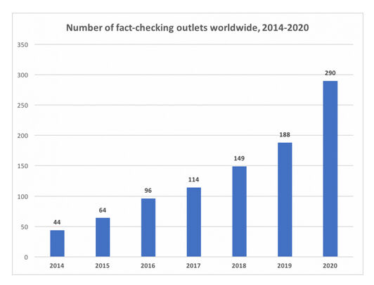
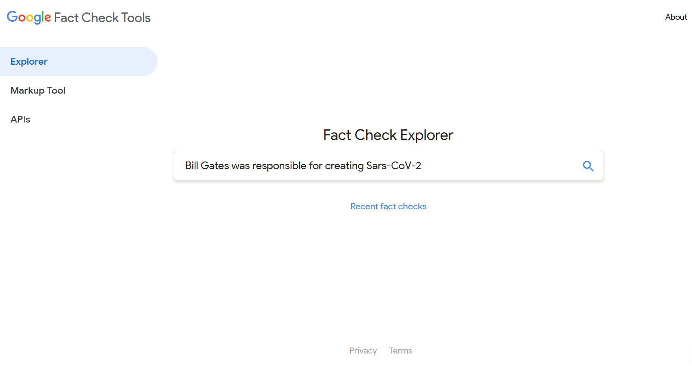
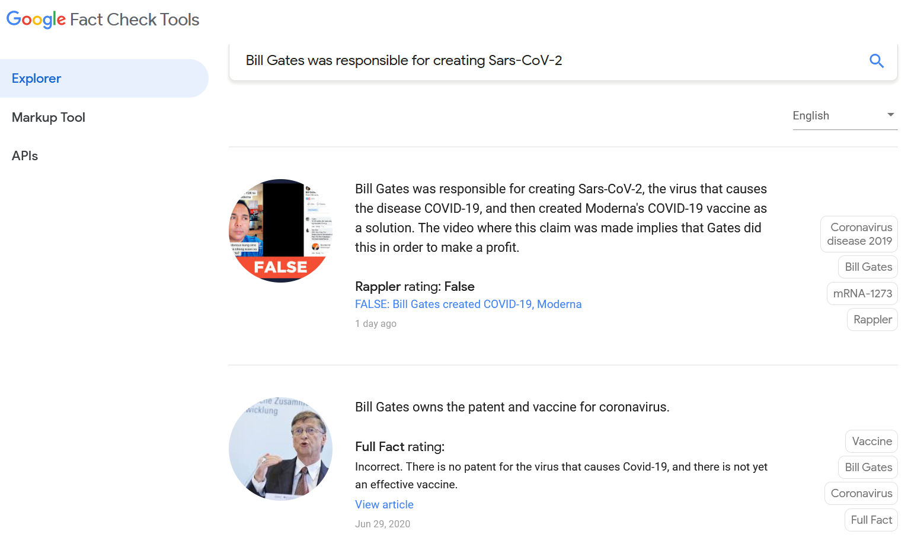
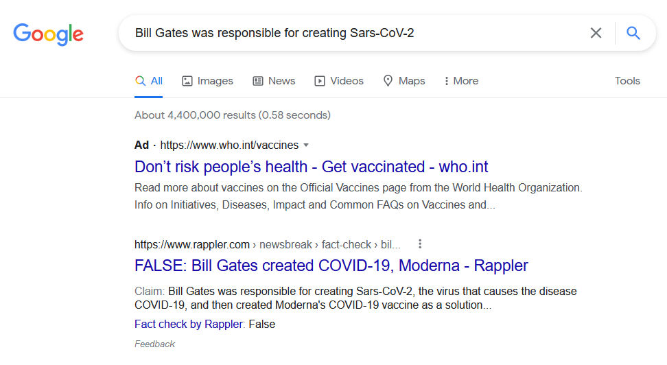
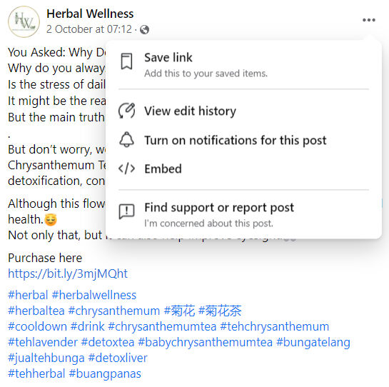
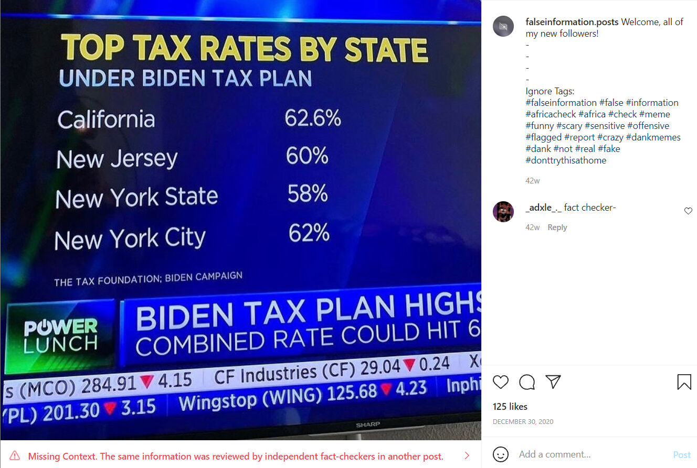
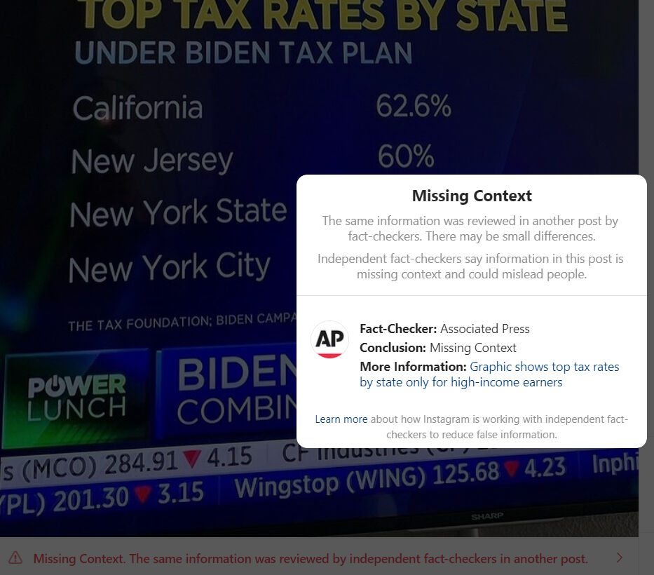
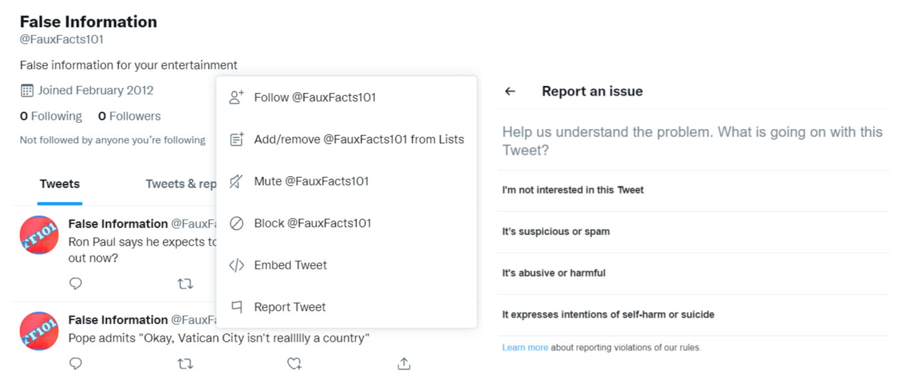
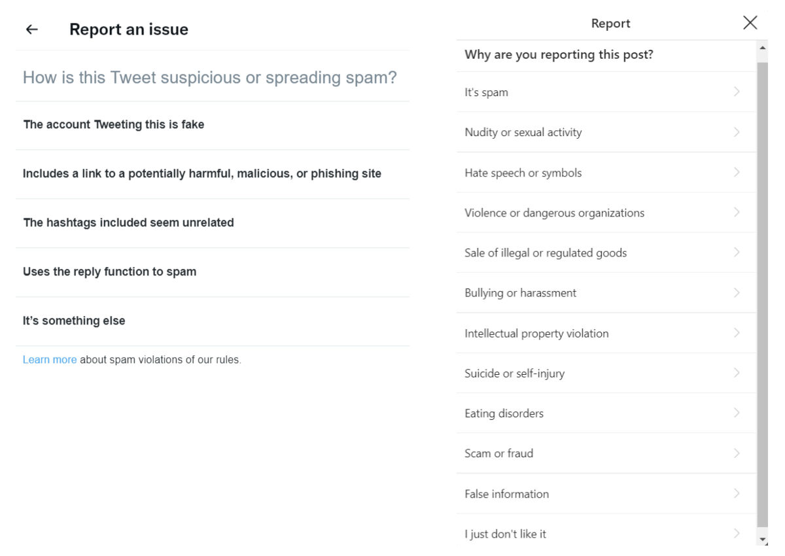

Trainees Edition
Trainers Edition
Trainees Edition
Trainers Edition
MODUL 17: PLATFORME IN STORITVE ZA PREGLED DEJSTEV
Opis modula
Glavni namen tega modula je pojasniti platforme za preverjanje dejstev, njihovo delovanje in storitve preverjanja dejstev.
Sekundarni namen je usmerjati izvajalce usposabljanja, ki želijo vsebino tega modula uporabiti pri usposabljanju svojih udeležencev.
S temi cilji so predstavljene platforme in storitve preverjanja dejstev skupaj s smernicami, kako poučevati to temo.
Udeleženci, ki bodo uspešno zaključili ta modul, bodo znali:
- prepoznati preverjanje dejstev in osebe, ki dejstva preverjajo
- razumeti platforme za preverjanje dejstev in njihovo delovanje
- razumeti Mednarodno mrežo za preverjanje dejstev (angl. International Fact-Checking Network oz. IFCN)
- razumeti "Kodeks načel"
- razumeti organizacije, ki preverjajo dejstva
- razumeti avtomatizirano preverjanje dejstev
Poleg tega bodo izvajalci usposabljanja, ki bodo uspešno zaključili ta modul, lahko pokazali, da razumejo, kako poučevati platforme za preverjanje dejstev, njihovo delovanje in storitve preverjanja dejstev.
Struktura modula
Ta modul je sestavljen iz naslednjih delov:
- Opis modula (cilji, opis vsebine in učni rezultati)
- Struktura modula
- Smernice za udeležence usposabljanja
- Smernice za izvajalce usposabljanja (kako se pripraviti, metode za uporabo in nasveti za izvajalce usposabljanja)
- Vsebina (študijsko gradivo in vaje)
- Kviz
- Viri (reference in priporočeni viri)
Glavni cilji modula, opis vsebine in učni rezultati so pojasnjeni v delu Opis modula. Smernice za udeležence usposabljanja vključujejo navodila in predloge za udeležence izobraževanja. Smernice za izvajalce usposabljanja vodijo izvajalce usposabljanja skozi različne faze usposabljanja in vsebujejo nasvete, ki bi lahko bili koristni pri poučevanju predmeta. Vsebina vključuje vsa študijska gradiva in vaje, povezane z vsebino. Kviz vključuje vprašanja z več možnostmi izbire in/ali resnična/nepravilna vprašanja, s katerimi lahko udeleženci usposabljanja preverijo svoj napredek. Viri vsebujejo dve komponenti: reference in priporočene vire za nadaljnje branje in študij. Reference so seznam virov, navedenih v vsebinskem delu. Priporočeni viri so sestavljeni iz seznama dodatnih virov, ki jih priporočamo za branje, da bi se naučili več o temi.
Smernice za udeležence usposabljanja
Od udeležencev izobraževanja se pričakuje, da bodo prebrali besedilo in izvedli vaje. Za dodatne informacije lahko poiščejo predlagane vire. Po končanem študiju vsebine udeležencem priporočamo, da opravijo kviz za oceno svojega napredka. Po potrebi lahko ponovno pregledajo študijsko gradivo.
Vsebina: Platforme in storitve za preverjanje dejstev
Uvod
O pomenu pojmov, kot sta verifikacija in preverjanje dejstev, ter o razlikah med njima smo razpravljali v modulu 16. Preden preidemo na platforme in storitve za preverjanje dejstev, ki so predmet tega modula, pa je koristno spomniti na opredelitev preverjanja dejstev.
Preverjanje dejstev je bilo v modulu 16 opredeljeno kot postopek, ki poteka po objavi in primerja javno objavljeno trditev z zanesljivimi in verodostojnimi viri. Osredotoča se tudi na logiko, skladnost in kontekst trditve (Mantzarlis, 2015). Oseba, ki preverja dejstva in se ukvarja s tem delom, se imenuje tudi preverjevalec dejstev. Tudi vsakdo, ki ima znanje in spretnosti preverjanja dejstev, lahko postane preverjevalec dejstev. Njihovo delo mora biti brez pristranskosti, zagovorništva in retorike. Poleg tega iščejo preverljiva dejstva (Elizabeth, 2014).
Glavni namen preverjevalcev dejstev in platform za preverjanje dejstev je povečati znanje z raziskovanjem in ponovnim poročanjem o domnevnih dejstvih v objavah/izjavah politikov ali vseh, katerih besede/objave vplivajo na življenja drugih. Poleg tega bi moral cilj preverjanja dejstev zagotoviti državljanom dejanske, jasne in skrbno preverjene informacije, ki jim bodo omogočile, da se pri volitvah ali drugih pomembnih odločitvah odločajo na podlagi informacij (Elizabeth, 2014). Preverjanje dejstev temelji na sklicevanju na avtoriteto. Pri tem so avtoriteta viri in ne preverjevalci dejstev (Mantzarlis, Funke in Benkelman, 2019).
Platforme za preverjanje dejstev
Začetki spletnih strani za preverjanje dejstev v Združenih državah Amerike, ki so gostile prve primere preverjanja, segajo v osemdeseta leta prejšnjega stoletja in vse intenzivnejše politične odnose z javnostmi v času predsedovanja Ronalda Reagana (Dobbs, 2012, str. 1; Lowrey, 2017, str. 377). Z naraščanjem priljubljenosti interneta konec devetdesetih let so številni politično usmerjeni blogi, pogosto z ideološko usmeritvijo, začeli preverjati dejstva o političnih kandidatih in glavnih novicah (Lowrey, 2017, str. 377). Tudi izvor spletnih strani za preverjanje seže do Snopesa in podobnih spletnih strani, ki so se pojavile v devetdesetih letih in razkrile goljufijo. Ta spletna mesta so začela preverjati politične trditve in tudi številna druga vprašanja (Fader, 2012; Lowrey, 2017, str. 377).
V 2000-ih letih smo bili priča vzponu platform, ki jih lahko imenujemo neodvisni preverjevalci političnih dejstev, in njihovemu hitremu širjenju po vsem svetu. Politične volitve v zadnjih letih so bile plodna tla za nastanek in rast platform za preverjanje dejstev, ki so ena od številnih novih oblik in praks novinarstva v digitalni dobi (Graves in Cherubini, n. d., str. 6; Lowrey, 2017, str. 376). Oblikovalci politik in fundacije so preverjanje dejstev obravnavali kot učinkovito orodje proti spletnim dezinformacijam (Mantzarlis, Funke in Benkelman, 2019). Prve platforme, namenjene ocenjevanju resničnosti političnih trditev, so se pojavile v Združenih državah Amerike v začetku leta 2000 (Graves in Cherubini, n. d., str. 6). Factcheck.org (2003) in PolitiFact (2007) sta med prvimi organizacijami, ki so začele delovati kot ne medijska, neodvisna platforma za preverjanje. Po najnovejšem štetju Duke Reporters' Lab (Stencel & Luther, 2021) je junija 2021 skupaj 341 aktivnih projektov preverjanja dejstev v približno 102 državah. To število je bilo junija 2020 objavljeno kot 290 (Stencel & Luther, 2020).
Vir: Duke Reporters’ Lab
Opravljene so bile različne študije o učinkih preverjanja dejstev skozi čas in predstavljena so bila različna mnenja (Lim, 2018, str. 1). Nekatere študije so pokazale, da bo preverjanje dejstev politike odvrnilo od spodbujanja lažnih ali zavajajočih trditev in jim lahko služi kot celovito/konsistentno orodje za spremljanje (Nyhan ve Reifler, 2015, str. 2, 19-20). Druge skupine študij so trdile, da preverjanje dejstev nima velikega vpliva na spremembo vedenja politikov, in izrazile, da politiki pogosto ignorirajo kritike preverjevalcev dejstev in jih imajo celo za politično pristranske (Froomkin, 2012; Gottfried, Hardy, Winneg in Jamieson, 2013; Waldman, 2015).
Cilj vseh platform za preverjanje dejstev je spodbujati resnico v javnem diskurzu. Ko pa gre za nadzor nad političnimi dejstvi, lahko to sproži razprave. Že preprosta vprašanja o dejstvih lahko povzročijo nesoglasja, preverjevalci dejstev pa so pogosto deležni negativnih kritik tistih, ki se ne strinjajo z njihovimi odločitvami (Graves & Cherubini, n. d., str. 6). Vendar nekateri raziskovalci (Ostermeier, 2011; Uscinski in Butler, 2013, str. 162-163; Uscinski, 2015), navajajo, da so platforme za preverjanje dejstev bodisi večstranske bodisi imajo več pomanjkljivosti (zlasti metodoloških) za državljane, ki iščejo resnico.
Za krepitev zaupanja v platforme in storitve preverjanja dejstev je priporočljivo, da si platforme preverjanja dejstev prizadevajo za večjo preglednost svojih storitvenih procesov in virov financiranja (Brandtzaeg & Følstad, 2017, str. 65). Zaradi kritik platform in storitev preverjanja dejstev se občasno pojavi vprašanje: "Kdo preverja preverjevalce dejstev?". Posamezniki predstavljajo najpomembnejše občinstvo, ki potrjuje preverjevalce dejstev. Posamezniki lahko preverijo, ali platforme za preverjanje dejstev delijo svoje metodologije in finančna sredstva. Hkrati lahko vsak posameznik nadzoruje korake preverjanja s pridobivanjem znanja in veščin preverjanja. Druga pomembna organizacija, ki zagotavlja, da se platforme za preverjanje dejstev ocenjujejo z vidika preglednosti, nepristranskosti (objektivnosti) in delujejo v skladu z določenimi standardi, je Mednarodna mrežo za preverjanje dejstev (angl. International Fact-Checking Network oz. IFCN) (International Fact-Checking Network, 2020).
Mednarodna mreža za preverjanje dejstev (IFCN)
Mednarodna mreža za preverjanje dejstev je bila ustanovljena leta 2015 v okviru Poynterja, ustanove, ki se ukvarja z novinarskim izobraževanjem in različnimi raziskovalnimi dejavnostmi. Namen te mreže je bil združiti vse večje skupnosti preverjevalcev dejstev po vsem svetu in zagovornikov informacij, ki temeljijo na dejstvih, v globalnem boju proti napačnim informacijam. Ekipa IFCN spremlja trende na področju preverjanja dejstev, da bi zagotovila vire preverjevalcem dejstev, prispevala k javnemu diskurzu in zagotovila podporo novim projektom/pobudam, ki izboljšujejo odgovornost v novinarstvu (International Fact-Checking Network, 2021).
Mreža IFCN je oblikovala in objavila "kodeks načel", ki je rezultat izmenjave idej s preverjevalci dejstev iz različnih delov sveta. Ta načela so namenjena organizacijam, ki redno objavljajo nepristranska poročila o točnosti izjav javnih osebnosti in vodilnih organizacij ter drugih široko razširjenih trditev o zadevah javnega interesa (“IFCN Code of Principles”, 2021a).
Merila, ki jih mora platforma za preverjanje dejstev izpolnjevati, da postane podpisnica IFCN, so (“IFCN Code of Principles”, 2021a):
- Zavezanost k nepristranskosti in poštenosti: Organizacije podpisnice uporabljajo enake standarde za vsako preverjanje dejstev in trditve preverjajo po enakem postopku. Pri preverjanju točnosti se ne osredotočajo na nobeno stran. Pri določanju rezultatov so odvisne od dokazov. Ne zagovarjajo ali zavzemajo političnega stališča glede vprašanj, ki jih preverjajo.
- Zavezanost standardom in preglednosti virov: Podpisniki želijo, da lahko njihovi bralci sami preverijo ugotovitve. Vse vire navedejo tako podrobno, da lahko bralci kopirajo njihovo delo (razen kadar bi bila lahko ogrožena osebna varnost vira).
- Zavezanost k preglednosti financiranja in organizacije: Organizacije podpisnice so pregledne glede svojih virov financiranja. Kadar sprejmejo financiranje od drugih organizacij, zagotovijo, da financerji nimajo vpliva na ugotovitve, do katerih so prišla poročila preverjevalcev dejstev. Organizacije podpisnice podrobno navedejo tudi strokovno ozadje vseh ključnih oseb v organizaciji, jasno navedejo organizacijsko strukturo in pravni status ter zagotovijo informacije, na podlagi katerih lahko bralci zlahka stopijo v stik z njimi.
- Zavezanost standardom in preglednosti metodologije: Podpisniki opišejo metodologijo, ki jo uporabljajo pri izbiri, raziskovanju, pisanju, urejanju, objavljanju in popravljanju pri preverjanju dejstev. Prav tako spodbujajo svoje bralce, da predložijo trditve, za katere potrebujejo preverjanje dejstev. Transparentno pojasnjujejo, zakaj in kako preverjajo dejstva.
- Zavezanost k odprti in pošteni politiki popravkov: Podpisniki objavijo politiko popravkov in jo skrbno upoštevajo. V skladu s politiko popravkov izvajajo postopek popravkov na odprt in pregleden način. Hkrati si prizadevajo, da bi bralci videli tudi popravljeno različico.
Skupaj je 31 podrobnejših meril, ki jih morajo podpisniki izpolnjevati v zvezi z vsakim od naštetih elementov. Neodvisni ocenjevalci ocenijo skladnost vlog s temi 31 merili. Njihove ocene pregleda tudi svetovalni odbor IFCN, da se zagotovita pravičnost in doslednost v celotni mreži (“IFCN Code of Principles”, 2021a). Odobritve imajo določeno obdobje veljavnosti. Ko se to obdobje izteče, se od platform za preverjanje dejstev zahteva, da posodobijo svoje zahtevane izjave, te pa se prav tako ocenijo in ustrezne ponovno odobrijo. Od oktobra 2021 je po vsem svetu skupno 88 odobrenih in aktivnih podpisnikov IFCN (“IFCN Code of Principles”, 2021b).
Med platformami za preverjanje dejstev lahko obstajajo razlike, ki odražajo le kulturne ali nacionalne razlike. Nekatere od njih so lahko povezane s časopisi, druge pa z univerzami ali različnimi nevladnimi organizacijami. Poleg tega so za mnoge velika težava finančna vprašanja. Kljub temu upamo, da bo upoštevanje "kodeksa načel" pomagalo zagotoviti kakovost, doslednost in preglednost ter odgovornost, namenjeno spodbujanju kakovostnega poročanja (Kessler, 2016).
Sodelovanje pri preverjanju dejstev
Čeprav je preverjanje dejstev glavna naloga platform za preverjanje dejstev, je lahko del uredniškega procesa tudi v drugih novičarskih organizacijah. Pri pripravi katere koli novice za objavo je faza, v kateri se izvedejo končni popravki, običajno faza uredniškega nadzora. Zato je zadnja faza uredniški nadzor, ki zagotavlja, da so trditve v novici raziskane in da so vse pomanjkljivosti/napake popravljene. V nasprotnem primeru lahko spregledane napake ogrozijo verodostojnost tako novinarja kot organizacije, s katero je povezan (Blatchford, 2021).
Zaradi razširjene uporabe izkrivljanj in laži v izjavah politikov in strokovnjakov so različne novičarske organizacije, kot so The Washington Post, Reuters, AP News, BBC, CNN, v svoje institucionalne strukture vključile enote za preverjanje dejstev (Ceci in Williams, 2020). Veliko število teh enot (na primer The Washington Post, Reuters, AP News, BBC, CNN) svoje analize preverjanja dejstev deli z bralci na spletnih straneh zadevnih novičarskih organizacij.
Poleg novičarskih organizacij so s platformami za preverjanje dejstev začele sodelovati tudi nekatere platforme družbenih medijev, kot so Facebook, Instagram, Twitter, TikTok in Google. Google vključuje dve osnovni orodji za preverjanje dejstev – to sta Fact Check Explorer in Fact Check Markup Tool. Namen obeh orodij je olajšati delo preverjevalcem dejstev, novinarjem in raziskovalcem (Google fact check tools, n.d.).
Fact Check Explorer: S tem orodjem lahko poiščete, ali so določeno temo preverile različne platforme za preverjanje dejstev, in če so, dostopate do ustreznih analitičnih podatkov. Prav tako je mogoče iskati po različnih elementih, kot so katera koli platforma za preverjanje dejstev ali ime osebe. Analitika preverjanja dejstev bo prikazana v raziskovalcu Fact Check Explorer, če bo ustrezala smernicam za prikaz v iskalniku Google ali YouTubu (Google fact check tools, n.d.).
Poglejmo na primer, ali je bila objavljena analiza trditve "Bill Gates je odgovoren za nastanek virusa Sars-CoV-2".
 S programom Fact Check Explorer smo dostopali do analiz, ki so jih objavile platforme, kot sta Rappler in Full Fact, da je "Bill Gates odgovoren za ustvarjanje virusa Sars-CoV-2" in da je trditev napačna.
Fact Check Markup Tool (orodje za označevanje preverjanja dejstev): Če imate spletno stran, na kateri pregledujete trditve, ki so jih predložili drugi (kot platforme za preverjanje dejstev), lahko na spletno stran vključite strukturirane podatke ClaimReview. Tako lahko strukturirani podatki ClaimReview zagotovijo, da se povzeta različica vašega preverjanja dejstev prikaže v rezultatih iskanja Google, ko se vaša stran pojavi v rezultatih iskanja za to trditev (Google fact check tools, n.d.).
Na primer, poglejmo, ali se analize, povezane s trditvijo "Bill Gates je odgovoren za ustvarjanje virusa Sars-CoV-2", pojavijo v rezultatih iskanja, ki smo jih naredili o trditvi v iskalniku Google.
Vir: Rezultati iskanja v Googlu za “Bill Gates je odgovoren za nastanek virusa Sars-CoV-2”
Analiza, ki jo je objavil Rappler glede neresničnosti trditve, se je pojavila v rezultatih iskanja v iskalniku Google.
Med platformami družbenih medijev je Facebook začel sodelovati z neodvisnimi tretjimi preveritelji dejstev (kot so Full Fact, PolitiFact, Teyit), certificiranimi prek nevtralne organizacije IFCN, ki ugotavljajo, pregledujejo in ocenjujejo morebitne napačne informacije tako na Facebooku kot na Instagramu in WhatsAppu, ki delujeta pod isto streho. V zvezi s tem od leta 2016 poteka širitev programa preverjanja dejstev, ki vključuje več kot 80 organov za preverjanje dejstev, ki delujejo v več kot 60 jezikih po vsem svetu. Program se osredotoča na obravnavanje virusnih napačnih informacij (zlasti dokazljivih lažnih trditev, ki lahko zavajajo ali povzročajo škodo) (Facebook Journalism Project, 2021).
Ko sodelujoče platforme za preverjanje dejstev zaznajo napačen/spremenjen/delno napačen/pomanjkljiv kontekst, se na platformi (Facebook in Instagram) uporabijo nekatere aplikacije, povezane s to vsebino (Facebook Journalism Project, 2021):
- Zmanjšana distribucija: Na Facebooku se ta vsebina prikaže nižje v novicah, njena distribucija pa se zmanjša, na Instagramu pa se ta vsebina odstrani iz hashtagov in strani za odkrivanje.
- Opozorila o deljenju: Ko uporabniki poskušajo deliti to vsebino, se status o tej vsebini uporabniku sporoči kot pojavno obvestilo.
- Obvestila o deljenju: Uporabniki, ki so že delili to vsebino, so obveščeni tudi o dodatnem poročanju o statusu te vsebine.
- Oznake z napačnimi informacijami: Za vsebino, ki so jo platforme za preverjanje dejstev ovrgle, se uporabi jasna in vizualna oznaka, ki dodaja povezave do povezane analitike platforme za preverjanje dejstev.
- Odprava spodbud za ponavljajoče se kršitelje: Kadar strani, skupine, računi ali spletna mesta večkrat delijo vsebino, ki so jo sodelujoče platforme za preverjanje dejstev ovrgle, se zmanjša njihova skupna razširjenost. Poleg tega za določeno obdobje izgubijo možnost oglaševanja ali zaslužka.
Kot uporabnik Facebooka lahko prijavite vsebino, ki se vam zdi sumljiva, ali prijavite, da vsebuje lažne informacije.
Vir: A Facebook post
Vir: Prijava objave na Facebook-u
Podobna struktura pritožb se uporablja tudi na Instagramu. Tretje platforme za preverjanje dejstev, ki sodelujejo s platformo družbenih medijev, pregledajo vsebino in preučijo objave s sumljivo vsebino. Ko ugotovijo, da objava vsebuje napačne informacije, ji dodajo izjavo, da vsebuje napačne informacije, tako da so uporabniki na to opozorjeni.
Vir: Objava na Instagramu, ki vsebuje manjkajočo vsebino
Vir: Opozorilo "manjkajočega konteksta" v objavi na Instagramu
Twitter je tudi napovedal, da je zagnal pilotno aplikacijo z imenom Birdwatch, in izjavil, da se bo boril proti zavajajočim informacijam. S to aplikacijo bodo uporabniki lahko pisali opombe, ki bodo vsebovale dodatno vsebino k tvitom, za katere menijo, da vsebujejo zavajajoče informacije. Za zdaj lahko vsebino na strani Birdwatch in dodane opombe o napačnih informacijah vidijo le prebivalci ZDA (Twitter help center, n.d.).
Uporabniki lahko sumljivo vsebino prijavijo tudi na Twitterju, tako kot na Facebooku in Instagramu.
Vir: Prijava objave na Twitterju

Vir: Prijava objave na Twitterju
Avtomatizirano preverjanje dejstev
Glede na hitrost, s katero se dezinformacije širijo digitalno, je pomembno, da imajo izvajalci preverjanja dejstev na voljo orodja, ki jim pomagajo analizirati tokove podatkov in se hitro odzvati na zavajajoče trditve, ko se pojavijo. Avtomatizacija sicer še ne more v celoti pokriti procesa od začetka do konca, lahko pa preverjevalcem dejstev pomaga v različnih fazah procesa preverjanja dejstev (Sittmann in Tompkins, 2020). Avtomatizacija se lahko uporablja kot pomočnik, da bi okrepila potrjevalce (Full Fact, n.d.):
- vsakodnevno spremljanje in določanje najpomembnejših dogodkov tistega dne za preverjanje dejstev;
- situacije, v katerih se ponavljajo informacije, za katere je bilo predhodno ugotovljeno, da so napačne;
- natančno spremljanje vsebine z nadzorom v realnem času.
Na primer, pri ugotavljanju zavajajočih trditev za politične dogodke v živo lahko preverjevalci dejstev uporabijo programsko opremo za pretvorbo zvočnih informacij v besedilno obliko, ki jo stroji lažje obdelajo (kot to počne sistem Squash, ki ga je razvil Duke Reporters’ Lab), ali sprejemajo televizijske podnapise (kot to počne sistem Live podjetja Full Fact). Nato pridejo na vrsto tehnike obdelave naravnega jezika in programska oprema, ki označuje stavke (kot je ClaimBuster), se lahko uporabi za poudarjanje trditev in onemogočanje nepomembnih izjav. Poleg tega se lahko programska oprema, kot je ClaimReview, uporabi za filtriranje predhodno pregledanih trditev s primerjavo rezultatov s podatkovnimi zbirkami prejšnjih raziskav. Avtomatizacija lahko pomaga tudi pri razširjanju analitike preverjanja dejstev. Chequeabot lahko na primer pripravi objave v družbenih medijih, ki jih urednik na argentinski platformi za preverjanje dejstev Chequeado pregleda in nato objavi (Adair, 2021; Sittmann & Tompkins, 2020).
Kot je bilo že omenjeno v modulu 16 (glej modul 16), avtomatizacija ne zagotavlja 100-odstotne uspešnosti, ko gre za preverjanje vsebin, ki jih ustvarjajo uporabniki. Zato je pri preverjanju dejstev idealna kombinacija tradicionalnih novinarskih tehnik in avtomatizacije (Wardle, n. d., str. 27).